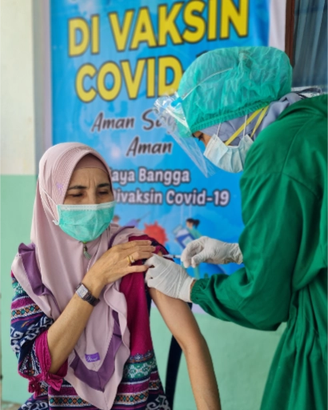

United Nations In Indonesia
Country Results Report 2021
A Year in Review

In 2021, as the UN and the Government of Indonesia contended with the fallout of the pandemic’s first year, Indonesia faced a resurgent health crisis driven by COVID-19’s virulent Delta Variant.
At the pandemic’s July peak, Indonesia recorded more than 350,000 new COVID-19 infections one week and more than 12,400 deaths the next. Meanwhile, the pandemic’s socio-economic impacts further disadvantaged those already at risk of
being left behind, including migrant workers, refugees, people living with HIV, and people with disabilities. The pandemic also struck a blow to progress on gender equality with sectors such as retail, hospitality, and garment manufacturing that
employ many women sustaining massive job losses, and the informal sector hit harder still.
Young people have been similarly disadvantaged. Between 2020 and 2021, the
proportion of youth not in employment, education, and training doubled from 8% to
16.4%. Meanwhile, the proportion of youth working in the informal sector rose by 6%
overall between February 2020 and February 2021, with the proportion of informally
employed young graduates rising 13.1% in that time.
 Despite the escalating challenges, however, the Government of Indonesia and the
UN’s extraordinary COVID-19 response and recovery efforts began to yield positive
results in 2021.
Despite the escalating challenges, however, the Government of Indonesia and the
UN’s extraordinary COVID-19 response and recovery efforts began to yield positive
results in 2021.
The UN and the Government of Indonesia orchestrated one of the world’s most
complex vaccination campaigns across thousands of inhabited islands that span
three time zones. By January 19, 2022, Indonesia had administered more than 300
million COVID-19 vaccination doses, including most of the 87 million doses whose
arrival the UN facilitated through the COVAX facility.
Meanwhile, Gross Domestic Product (GDP) growth bounced back to 3.69%,
approaching the government’s growth target of 3.7%–4.5%, while GDP per capita
reached $4,349.5.
The Government’s 2021 Voluntary National Review showed that some SDG
indicators that had been making headway from 2015 to 2019 had veered off course,
including the proportion of the population living below the national poverty line, the
prevalence of undernourishment, and the economic growth and unemployment rate.
But other indicators progressed despite the pandemic.
Indonesia saw improvements in the completion rate of senior secondary education under SDG4 (quality education), the proportion of households using improved sanitation services under SDG6 (clean water and sanitation), the renewable energy share in the total final energy consumption under SDG7 (affordable and clean energy), and the proportion of children under 5 years-of-age whose births were registered by the civil registration office under SDG16 (peace, justice, and strong institutions).
Indonesian Democracy improved in parallel. The 2021 Democracy Index released by The Economist Intelligence Unit ranked Indonesia 52nd place out of167 countries in 2021, compared to 64th the year before. While Indonesia remained categorised as a “flawed democracy”, it was among the 10 countries with the biggest score improvement.
Indonesia also took up on a more prominent global role. On December 1, 2021, Indonesia assumed the Presidency of the Group of Twenty (G20), where it has vowed to represent the voices of less developed nations, including small island states. It has the political and diplomatic advantages of being a non-aligned, active, and strategic middle power that can potentially drive more impactful and actionable G20 resolutions.
Indeed, Indonesian President Widodo’s appearance at COP26 resonated, globally. As home to the third-largest area of tropical forest cover after Brazil and Democratic Republic of Congo, and as the world’s top coal exporter, Indonesia’s commitments to halting deforestation, transitioning to renewable energy, climate finance, and net-zero carbon emissions can make a critical contribution to the global effort to arrest the climate emergency and inspire global change.